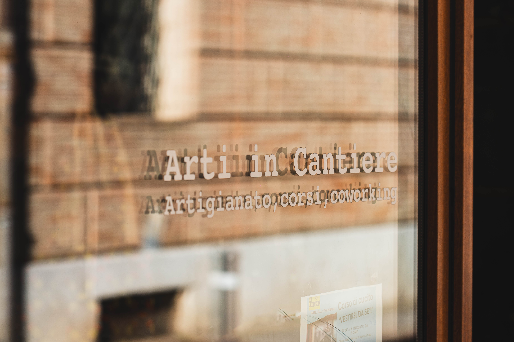
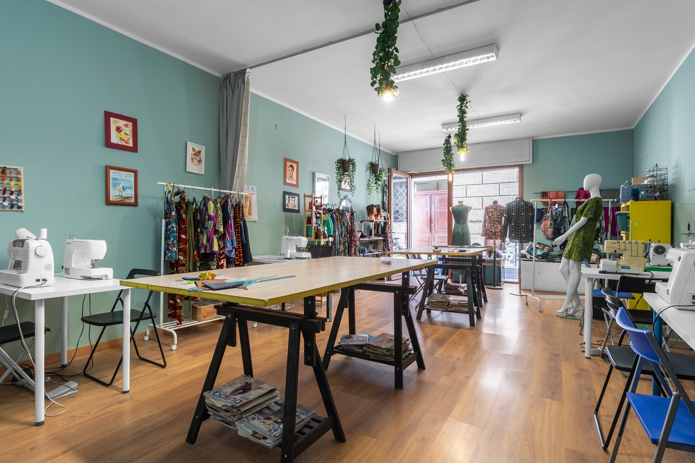

Laboratorio e Coworking tessile
Arti in Cantiere
Creare · Cucire · Incontrarsi
Rimini
Arti in Cantiere, dal 2018, è un laboratorio aperto alle sperimentazioni nel settore tessile, alla condivisione di passioni manuali e al piacere di esprimere la propria creatività.
Porti il tuo progetto, le tue idee, la voglia di fare con le mani. Trovi spazio, macchine, persone con cui sperimentare e qualcuno con esperienza pronto a supportarti.

Il laboratorio
Lo spazio di Arti in Cantiere è in centro a Rimini: una stanza luminosa con le pareti verde salvia, macchine da cucire, tagliacuci, tavoli grandi, stoffe e manichini.
A disposizione dei soci c'è anche una ricca raccolta di cartamodelli, per poter realizzare qualsiasi tipo di capo o accessorio. Anche chi arriva senza un'idea precisa trova da cui partire.
È uno spazio pensato per lavorare con calma, senza fretta, e per incontrarsi.
